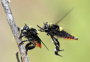
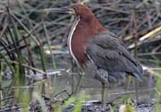
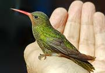
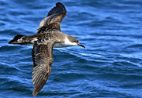
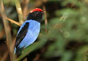
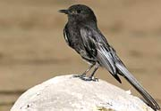
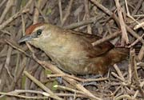
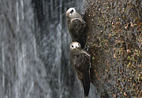

|
fotos de animales silvestres de
ARGENTINA |
 |
|
www.fotosaves.com.ar - Alec Earnshaw |
|||
photos of wild animals of ARGENTINA |
|||
Actualizado / Updated: 5-2021
|
fotos de animales silvestres de
ARGENTINA |
|
|
www.fotosaves.com.ar - Alec Earnshaw |
|||
photos of wild animals of ARGENTINA |
|||
|
Videos
|
Te invito a ver algunos de mis videos. Hacé click en la foto para visualizarlo.
Check out some of my videos! Click on the photo to view it.
Video |
Español
|
English
|
 |
Moscardón Cazador de Abejas BREVE VIDEO MUSICAL Acompañado por "El baile del Moscardón", de Nikolai Rimsky-Korsakov, este video muestra una breve escena de hostigamiento entre dos individuos de esta especie (macho y hembra?), conocido por aterrorizar a las abejas. Duración: menos de 1 minuto |
Bee-hunting Horse-Fly Mallophora ruficauda BRIEF MUSICAL VIDEO To the tune of a famous Nikolai Rimsky-Korsakov piece, this video shows two individuals of this species (male and female perhaps?), that are well known for terrorizing honey-bees. Duration: less than 1 minute |
 |
Hocó Colorado Un breve video de 4 minutos sobre el Hocó Colorado en Paseo del Viento, Vicente López (Buenos Aires, Argentina) Utilizando filmaciones hechas en mayo de 2016. |
Rufescent Tiger-Heron A brief 4-minute video about this lovely bird, basen on footage I obtained in May 2016. brief (2 min 45 |
 |
Picaflores de Herradura Un breve relato (2 min 45") de un viaje a la provincia de Formosa, Argentina, en octubre 2019, destacando las fotos de picaflores obtenidas en esta localidad, en particular del Picaflor de Barbijo, y gracias a la generosidad de la familia Saporiti. Musicalizado por mis propias composiciones. |
Hummingbirds of Herradura A brief (2 min 45") video on my trip to the province of Formosa in Argentina, in October 2019, highliting the hummingbird photos and footage I was able to get, in particular of the Blue-tufted Starthroat, and thanks to the kindness of the Saporiti family. In Spanish. Musical score by yours truly. |
 |
Excursión Pelágica LAS AVES QUE VIVEN MAR AFUERA Este video narra una excursión al mar para observar albatros, petrreles y pardelas, las aves que habitan el océano y que no tocan tierra, salvo para criar. Musicalizado por mis propias composiciones. |
Pellagic Excursion THE BIRDS FROM OUT YONDER This 5-minute video narrates a day-trip out to sea, departing from the port of Mar del Plata (Buenos Aires province, Argentina) to observe and photograph albatross and other seabirds that live out on the ocean and only return to land when it's time to breed. Musical score by yours truly. |
 |
Las Aves Danzantes |
The Dancing Birds SHOW OF NATURE In this video, narrated in Spanish, you can enjoy the wonderous "dance" display by a group of Blue Manakins. Then, partly toungue-in-cheek, I propose how these birds may have learnt to dance like that, in the same way that human ballet has gradually evolved in search of grace and perfection. |
 |
La Viudita de Río Un video musical sobre esta especie que en Argentina se observa en ríos de las Yungas del nor-oeste. Obtuve el material fílmico en octubre de 2017 cerca de Eco-portal de Piedra, Jujuy. En cuanto a la música: los arreglos, ejecución y parte de las composiciones son mías. Duración: 4 minutos |
The Black Phoebe This video, narrated in Spanish, uses footage from a 2017 trip the cloud forest (yungas region) in NW Argentina. The highlght is scenes of adults feeding their chicks. Musically it begins with a traditional tune from the province of Jujuy, then overtaken by my own compositions. All instruments played by myself. |
 |
Espineros de la provincia de Jujuy Un breve repaso de los Espineros (Phacellodomus) que habitan la provincia de Jujuy. Obtuve el material de video y fotográfico en viajes a la provincia en 2014 y 2017. Música jujeña ejecutada por mi en guitarra. Duración: 5 minutos |
|
 |
El Vencejo de Cascada |
The Great Dusky Swift A 4-minute documentary celebrating one of the most daring birds in the world. Filmed at Iguazú National Park in September 2015. Sights of the imposing falls and the great Iguazú river. See these birds diving to reach their nesting sites. Filmed, produced, narrated and musical theme by Alec Earnshaw. WATCH DOCUMENTARY - ENGLISH NARRATION |
| All Kinds of Everything Un video armado con fotos y una melodia conocida. Las fotos, el armado del video y los arreglos musicales (con MIDI) son míos. El video es un tributo a la ONG Aves Argentinas, y pretende mostrar que hay aves silvestres en todos lados, por más que no esten siempre a la vista. Para apreciar mejor la música pasalo apagando la imagen, |
All Kinds of Everything Birds are to be found in all kinds of places, even if not always in view. A personal tribute to Aves Argentinas, the bird conservation NGO. All stills, video composition and muscal arrangements for MIDI are mine. This song by Derry Lindsay & Jackie Smith was sung by Dana to win the Eurovision song contest in 1970 for Ireland. Here it is abridged and slightly changed. |
|
 |
¿Cantan o Lloran? Video de 5 minutos cuidadosamente compaginado con fotos y filmaciones para mostrar las dificultades a las que estan expuestas nuestra fauna silvestre debido a los modernos cambios en el uso de la tierra. Música de Pink Floyd. |
Are they singing or weeping? A carefully-crafted 5-minute video that combines photos and some footage with a Pink Flowy track to transmit the plight of our wildlife resulting from the many changes in modern land use. |
 |
Las Estrellas del Uritorco Secuencia de 10 segundos realizada por técnica de Time Lapse que muestra el paso de las estrellas sobre el cerro Uritorco durante unos 25 minutos. Filmado desde La Morada de la Luna, Capilla del Monte la noche del 20 de marzo de 2013. |
Stars of the Uritorco A short 10-second time-lapse video showing the movement of the stars over a period of about 25 minutes. Filmed from La Morada de la Luna, Capilla del Monte, on the night of March 20th, 2013. |
| Ataque al Uritorco Secuencia derivada de la anterior. En una apacible noche el indómito Uritorco es atacado por una flota de OVNIs y se desata un desastre. |
Uritorco Mega Hit On a quiet night the town of Capilla del Monte and the Uritorco mountain are attacked by a fleet of seemingly harmless UFOs! Mayhem follows. |
|